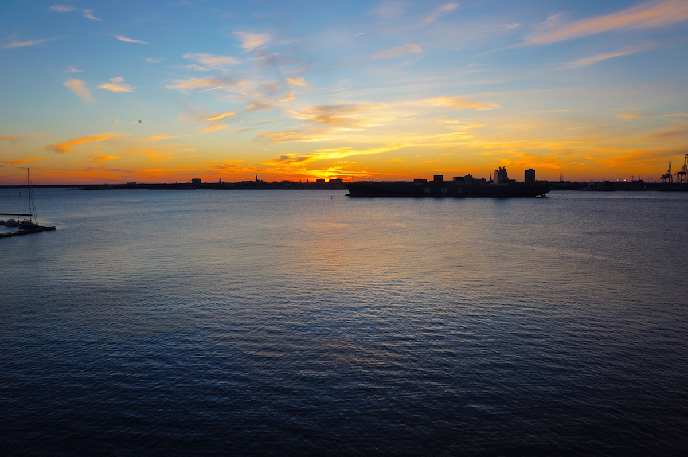

My afternoon in Charleston started off near East Bay street where I snapped what would turn out to be the best photo of the day. Looking down towards the tiny eccentric shop "Slightly North of Broad" I was able to frame the photograph nicely with the famous SC state tree, the palmetto. The vibrant, soft-toned pastel colors that make Charleston so famous contrast the day's highlighted blue sky perfectly. The shadows and ivy on the side of the store also add a fun effect.
Posted on January 10th, 2015

The next shot of the day came right as I was walking along rainbow row amongst the plethora of peach, pineapple, and cherry colored houses. In a part of the country where the confederacy still lives on to this day (and in the same town where the civil war originated) I saw the most beautiful American flag dancing around in the salty wind outside the front porch of a magnificent ivory mansion. The mature palmettos on the side of the photo add a nice down-home feel and "Charlestonesque" reassure to the photograph. The bright, natural light reflects perfectly off the red, white, and blue stripes of old glory.

Near the pier downtown, I was able to capture this beautiful image. With the sun setting soon and the light behind me to fill the shot just right, I froze all 12 of the water jets in time, all shooting towards the stone center of the fountain. For a winter's afternoon in the middle of January, this sure didn't feel like it at all.

Continuing to walk down East Bay, I quickly looked up and snapped this fun shot. The sign is very much symbolic of what Charleston is like – bright, fun, and historic.
The last shot in Charleston before sundown came in the French Quarter off East Bay. I tried to grab a unique angle on this one while also getting the clear contrast with the sky in the mix. I also like the sharp angles in the foreground against the soft blue sky. The lighting in this shot was exceptional.
Just across the bay in Mount Pleasant I was lucky enough to sneak on a tour of the USS Yorktown aircraft carrier before the sun went down for the day. I took these last two photographs just as the sun was crossing the horizon. It was an absolutely incredible sunset - with no edits, the saturation and contrast even had to be dialed back a few notches. In the bottom shot, I was able to catch the silhouette of several decomissioned fighter jets resting on their war-hardened carrier.

If the above photos haven't convinced you to visit Charleston yet, I'm not sure what else could. For a city on the East Coast, Charleston has no comparison. Just walking through town is almost like a walk back in time, and with no highrises anywhere to be seen, the city feels like a large town. Charleston is a true gem of a town; a bright and historical seaside haven that has it all - culture, fun, and lots of southern charm.